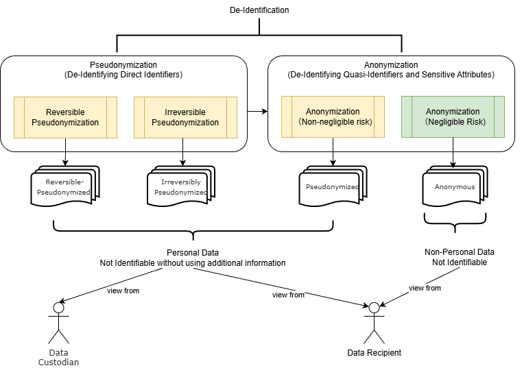
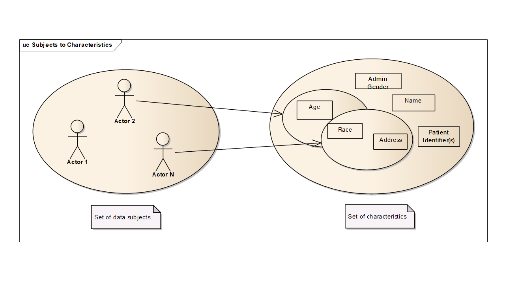

De-Identification Handbook
2.0.0-comment - ballot

De-Identification Handbook
2.0.0-comment - ballot

This page is part of the De-Identification Handbook (v2.0.0-comment: Publication Ballot 1) based on FHIR (HL7® FHIR® Standard) R4. This is the current published version in its permanent home (it will always be available at this URL). For a full list of available versions, see the Directory of published versions
De-identification, pseudonymization, and anonymization, are the processes that mitigate the privacy risk of associating the disclosed information with an individual or a group of individuals when sharing personal data or anonymous information between different data environments. These concepts are widely used to protect individuals, especially in fields like healthcare. The most common healthcare use of these processes is to protect individual patients, but they may also be applied to protect healthcare clinicians and other individuals being involved.
Applying risk mitigation processes such as de-identification, anonymization, and pseudonymization can be challenging due to varying and sometimes conflicting interpretations across different frameworks. For instance,(ISO 25237, 2017) describes pseudonymization as a form of de-identification, while (ISO/IEC 20889, 2018) refers to it as a de-identification technique. Under the (GDPR, 2016), pseudonymization is defined as a type of personal data processing and further specifies the conditions under which personal data can no longer be attributed to a specific individual. This aligns closely with the concept of de-identification under China’s Personal Information Protection Law (PIPL, 2021),as both emphasize that personal data should not be attributable to an individual without the use of additional information. In contrast, the HIPAA Rule (under 45 C.F.R §164.514(b)(1)(i)) does not frame de-identification in terms of whether additional information is used. Instead, it focuses on achieving a “very small risk” that the data could be used to identify an individual.
The treatment of anonymous data also varies. Both GDPR and PIPL agree that data protection rules do not apply to anonymous data—defined in GDPR Recital 26 as “information which does not relate to an identified or identifiable natural person or to personal data rendered anonymous in such a manner that the data subject is not or no longer identifiable.”. PIPL defines anonymization as a process of processing personal information to make it impossible to identify specific data subject and impossible to restore. PIPL (2021) describes anonymization as a process that makes personal information untraceable to a specific individual and irreversible, a view echoed by ISO 25237, which stresses that the data subject cannot be identified directly or indirectly. However, GDPR stops short of formally defining anonymization, despite referencing “anonymous information” in Recital 26.
The varied interpretations of these concepts often spark disputes when implementing privacy compliance measures. Notable examples include the debate over absolute versus relative anonymization and the differing scopes of pseudonymization versus de-identification. Absolute anonymization, which assumes no risk of linking data to an individual, is often impractical since some possibility of re-identification typically remains. The EDPB (2025) broadens pseudonymization to cover not just direct identifiers (like names) but also quasi-identifiers (like age ranges), incorporating techniques such as randomization and generalization. This expanded scope clashes with narrower pseudonymization methods outlined in ISO 20889 and (NIST 800-188, 2023). These conflicts may persist, potentially driven by underlying factors—such as the EDPB’s reliance on GDPR terminology, which avoids the term “de-identification” altogether.
This handbook addresses these challenges by providing a practical lens. Rather than adhering strictly to any single definition, it synthesizes widely accepted ideas and adapts them for actionable use. By clarifying the relationships between these concepts—how they overlap, diverge, and serve distinct purposes—we aim to equip you with a flexible framework tailored to real-world needs, whether you’re ensuring compliance or enabling data utility. Key consensus points include:
The transformation of personal data to mitigate re-identification risk results in distinct levels of identifiability. Standards like China's GB/T 42460-2023 and academic frameworks like (Hintze, 2017) each present a four-level identifiability framework. While GB/T 42460-2023 provides a risk-based classification for data security—from direct identifiers to data with no identifiers—Hintze's work offers a complementary view focused on data processing contexts. Although their specific definitions diverge, both frameworks share the principle that re-identification risk diminishes along the ordered levels, progressing from left to right (as illustrated in the figure below).

The identifiability concepts presented herein are largely derived from the definitions in (Hintze, 2017). Specifically, the first three levels are consistent with those outlined in that work. The definition for the last level, anonymous data, is adjusted considering the other sources including the (GDPR, 2016),(PIPL, 2021), and (U.S. Congress, 1996).
Note The data example in the following tables is using synthetic data crafted for illustration the concept of the identifiability and does not reflect real patient data.
Identified Data
Identified data relates to a specific natural person whose identity is apparent from the data; contains data that identifies the person (such as a name, e-mail address, or government-issued ID number); or is directly linked to data that is accessible and identifies the person.
Table: Identified Patient Records (Patient ID and Patient Name values simulate real personal identifiers for demonstration purposes)
| Patient ID | Patient Name | Age | Gender | Weight (kg) | Height (cm) | City | Zip Code | Diagnosis Code (ICD-10) |
|---|---|---|---|---|---|---|---|---|
| P001 | John Smith | 35 | Male | 84 | 180 | New York | 10011 | J45.909 |
| P002 | Emily Johnson | 52 | Female | 65 | 164 | Beverly Hills | 90210 | E11.9 |
| P003 | Michael Williams | 38 | Male | 91 | 178 | New York | 10012 | I10 |
| P004 | Jessica Brown | 41 | Female | 62 | 167 | Manhattan Beach | 90266 | O24.419 |
| P005 | David Jones | 51 | Male | 95 | 182 | Beverly Hills | 90210 | K29.70 |
| P006 | Sarah Davis | 44 | Female | 59 | 165 | New York | 10011 | J45.909 |
| P007 | James Miller | 55 | Male | 78 | 173 | Beverly Hills | 90210 | C34.90 |
| P008 | Linda Wilson | 58 | Female | 70 | 160 | Manhattan Beach | 90266 | I10 |
| P009 | Robert Moore | 33 | Male | 88 | 179 | New York | 10012 | E11.9 |
| P010 | Patricia Taylor | 42 | Female | 70 | 170 | New York | 10011 | O24.419 |
Reversible-Pseudonymized Data
Reversible-Pseudonymized data relates to a specific person whose identity is not apparent from the data, does not contain data that identifies the person, and the data is not directly linked with data that identifies the person; but there is a known, systematic way to reliably create or re-create a link with identifying data. To the data controller that pseudonymizes data, but retains the raw data set, additional data that allows re-identification, or a key that would allow the pseudonymization to be reversed, that pseudonymous data would be Reversible-Pseudonymized data.
Table: [Controlled Access] Key Mapping Table (Held by Data Controller)
| Original Patient ID | Mapped Pseudonym | Patient Name |
|---|---|---|
| P001 | AP-84351 | John Smith |
| P002 | AP-22978 | Emily Johnson |
| P003 | AP-61224 | Michael Williams |
| P004 | AP-73451 | Jessica Brown |
| P005 | AP-90087 | David Jones |
| P006 | AP-15243 | Sarah Davis |
| P007 | AP-44432 | James Miller |
| P008 | AP-58199 | Linda Wilson |
| P009 | AP-01128 | Robert Moore |
| P010 | AP-33567 | Patricia Taylor |
Table: Data with Mapped Pseudonyms
| Mapped Pseudonym | Patient Name | Age | Gender | Weight (kg) | Height (cm) | City | Zip Code | Diagnosis Code (ICD-10) |
|---|---|---|---|---|---|---|---|---|
| AP-84351 | * | 35 | Male | 84 | 180 | New York | 10011 | J45.909 |
| AP-22978 | * | 52 | Female | 65 | 164 | Beverly Hills | 90210 | E11.9 |
| AP-61224 | * | 38 | Male | 91 | 178 | New York | 10012 | I10 |
| AP-73451 | * | 41 | Female | 62 | 167 | Manhattan Beach | 90266 | O24.419 |
| AP-90087 | * | 51 | Male | 95 | 182 | Beverly Hills | 90210 | K29.70 |
| AP-15243 | * | 44 | Female | 59 | 165 | New York | 10011 | J45.909 |
| AP-44432 | * | 55 | Male | 78 | 173 | Beverly Hills | 90210 | C34.90 |
| AP-58199 | * | 58 | Female | 70 | 160 | Manhattan Beach | 90266 | I10 |
| AP-01128 | * | 33 | Male | 88 | 179 | New York | 10012 | E11.9 |
| AP-33567 | * | 42 | Female | 70 | 170 | New York | 10011 | O24.419 |
Table above is an illustration of a reversible-pseudonymized data generated via applying the process of Stage 1: Transforming Identified Data into Reversible-Pseudonymized Data to the sample data specified in the Table: Identified Patient Records.
Irreversibly Pseudonymized Data
Irreversibly pseudonymized data relates to a specific person whose identity is not apparent from the data, and the data is not directly linked with data that identifies the person. The data could potentially be re-identified if matched to additional identifying data provided by the data subject or a third party, but there is no known, systematic way for the controller to reliably create or re-create a link with identifying data.
Table: Irreversibly Pseudonymized Records with Hashed IDs (Assumption: re-identification risk is above the predefined threshold)
| Hashed ID | Patient Name | Age | Gender | Weight (kg) | Height (cm) | City | Zip Code | Diagnosis Code (ICD-10) |
|---|---|---|---|---|---|---|---|---|
| 0x9e107d… | * | 30-39 | Male | 90 | 180 | New York | 100 | J45.909 |
| 0x2c77d0… | * | 50-59 | Female | 62 | 164 | Beverly Hills | 902 | E11.9 |
| 0x3e4a2c… | * | 30-39 | Male | 90 | 178 | New York | 100 | I10 |
| 0x8f4b2f… | * | 40-49 | Female | 62 | 167 | Manhattan Beach | 902 | O24.419 |
| 0x5a8f6f… | * | 50-59 | Male | 90 | 182 | Beverly Hills | 902 | K29.70 |
| 0xf2d1a9… | * | 40-49 | Female | 62 | 165 | New York | 100 | J45.909 |
| 0x1b3a5c… | * | 50-59 | Male | 71 | 173 | Beverly Hills | 902 | C34.90 |
| 0x6d9f3b… | * | 50-59 | Female | 71 | 160 | Manhattan Beach | 902 | I10 |
| 0x7e8c1d… | * | 30-39 | Male | 90 | 179 | New York | 100 | E11.9 |
| 0x4c5e6f… | * | 40-49 | Female | 71 | 170 | New York | 100 | O24.419 |
Table above illustrates the irreversibly pseudonymized data generated by applying the process of Stage 2: Transforming Data into Irreversibly Pseudonymized Data (Path B) to the sample data specified in the Table: Identified Patient Records.
Anonymous Data
Information that does not relate to an identified or identifiable natural person, or personal data that has been rendered anonymous through an anonymization process such that the data subject is no longer identifiable.
Notes: (1) The original definition in (Hintze, 2017) considers only aggregated data at this level. In this book, the definition is derived from the GDPR Article 26 and (ISO 25237, 2017).(2) Practical/relative concept in understanding the idea of "no longer identifiable". The GDPR Article 26 further explains the meaning of "identifiable" as "To determine whether a natural person is identifiable, account should be taken of all the means reasonably likely to be used, such as singling out, either by the controller or by another person to identify the natural person directly or indirectly.".
Table: Anonymous Microdata with Hashed IDs (Assumption: re-identification is very small (below the predefined threshold) and is no longer identifiable)
| Hashed ID | Patient Name | Age | Gender | Weight (kg) | Height (cm) | City | Zip Code | Diagnosis Code (ICD-10) |
|---|---|---|---|---|---|---|---|---|
| 0x9e107d… | * | 30-39 | Male | 90 | * | * | * | J45.909 |
| 0x2c77d0… | * | 50-59 | Female | 62 | * | * | * | E11.9 |
| 0x3e4a2c… | * | 30-39 | Male | 90 | * | * | * | I10 |
| 0x8f4b2f… | * | 40-49 | Female | 62 | * | * | * | O24.419 |
| 0x5a8f6f… | * | 50-59 | Male | 90 | * | * | * | K29.70 |
| 0xf2d1a9… | * | 40-49 | Female | 62 | * | * | * | J45.909 |
| 0x1b3a5c… | * | 50-59 | Male | 71 | * | * | * | C34.90 |
| 0x6d9f3b… | * | 50-59 | Female | 71 | * | * | * | I10 |
| 0x7e8c1d… | * | 30-39 | Male | 90 | * | * | * | E11.9 |
| 0x4c5e6f… | * | 40-49 | Female | 71 | * | * | * | O24.419 |
Table above is an example of anonymous data produced by applying the process of Stage 3: Transforming Data into Anonymous Information to the sample data specified in the Table: Irreversibly Pseudonymized Records with Hashed IDs.
The table below summarizes the characteristics of the levels of identifiability by comparing it with (U.S. Congress, 1996) and (GB/T_42460, 2023).
Table 2.1-1: Characteristics of Levels of Identifiability
| Identified | Reversible-Pseudonymized | Irreversibly Pseudonymized | Anonymous | |
|---|---|---|---|---|
| Data Included | Direct Identifiers | Quasi Identifiers + Additional Information(a known, systematic way to reliably create or re-create a link with identifying data) | Quasi Identifiers | Aggregated Data or Candidates of Quasi Identifiers + Small Risk |
| GB/T_42460_2023 | Level 1: direct identifiers | Level 2: Quasi Identifiers + High Risk | Level 3: Quasi Identifiers + Acceptable Risk | Level 4: No Identifiers |
| HIPAA De-ID | Safe Harbor 18 identifiers | Not Available | Quasi Identifiers + very small risk | Not Available |
De-identification is a general term for any process of removing the association between a set of identifying data and the data subject(ISO 25237, 2017). The purpose of the process is to reduce the re-identification risk in a given data collection use case. Depending on the situation, the techniques can be used during the de-identification process can be different to balance the risk and data utility.
The ISO 25237 standard closely aligns with the HIPAA Rule (45 CFR 164.514(a)-(c)), which permits de-identification through the Safe Harbor method, Expert Determination method, or a combination of both. Although HIPAA does not use "pseudonymization" or "anonymization," it encompasses similar concepts: re-identification under 45 CFR 164.514(a)-(c)), which permits de-identification through the Safe Harbor method, Expert Determination method, or a combination of both. Although HIPAA does not use "pseudonymization" or "anonymization," it encompasses similar concepts: re-identification under 45 CFR

The figure above illustrates the concept of de-identification across various levels and also the outcomes (identifiability) of each process steps. De-Identification is the top level process above pseudonymization and anonymization. Pseudonymization is a particular type of de-identification focusing on transforming direct identifiers. The pseudonymization can be further categorized into reversible pseudonymization and irreversible pseudonymization. Reversible pseudonymization generates pseudonymized data that can be reidentified. Irreversible pseudonymization produces pseudonymized data that can no longer be reidentified at any time in the future.
Anonymization, depending on the risk level and the data recipient's capabilities, can be separated into anonymization with non-negligible risk and anonymization with negligible risk processes. Critically, as established by CJEU Case C-413/23 P, anonymity is not absolute but relative and the determination whether data is anonymous depends on the recipient's realistic ability to re-identify individuals, not the data custodian's. This means the same dataset may be considered personal data for one recipient but anonymous for another, depending on their respective access to re-identification means. Therefore, anonymization must be assessed from the data recipient's perspective. The outcome of anonymization with non-negligible risk, when viewed from the recipient's perspective, can still considered as Irreversibly Pseudonymized data. Only anonymization with negligible risk—where the recipient lacks realistic re-identification capability—generates anonymous data, which is deemed as non-personal information in modern privacy laws.
Without specificity and knowledge of the recipient's capabilities, the term de-identification can be confusing, especially when targeting implementation for compliance purposes. To address this, this handbook adopts a more specific framework: reversible pseudonymization, irreversible pseudonymization, anonymization with non-negligible risk, and anonymization with negligible risk. These distinctions are applied especially in contexts where the level of identifiability or legal requirements must be precisely defined. Simultaneously, this handbook uses 'de-identification' as a general term when the specific level of identifiability is less critical, such as when outlining a general risk-based approach.
When determining the extent of a de-identification process, there is a trade-off between the fidelity of the resulting de-identified dataset and the risk of re-identification considering the purpose of using data. According to (ISO 25237, 2017), "There is no single de-identification procedure that can meet the diverse needs of all medical applications while ensuring identity concealment. Every record release process must undergo a risk analysis to evaluate the balance between data utility and privacy protection". Every data release process shall be subject to risk analysis to evaluate:
the purpose for the data release (e.g., analysis);
the minimum information that shall be released to meet that purpose;
what the disclosure risks will be (including re-identification);
what release strategies are available.
Irreversible pseudonymization differs from reversible pseudonymization in that the additional information generated during the process won't be stored and maintained by an authorized entity to enable secure linking of the processed data back to the original personal identifiers. This distinction typically applies to scenarios focused solely on analyzing insights about a group or population.

In the above figures, each person is associated with specific characteristics such as age, administrate gender, given name, etc. Starting with zero knowledge, an attacker can only identify a large set of people as candidates. But each time the attacker obtains a characteristic, the set of candidate individuals is reduced. If an attacker can collect enough characteristics about a person, then the set of candidate individuals is reduced to a single person. De-identification techniques are used, to ensure that all these sets remain sufficiently large that the risk of identifying a specific individual is acceptable.
De-identification is also used to reduce risks such as bias in clinical studies or clinical reviews. De-identification is not often thought of in the context of treatment because you usually must associate the patient with his/her data in order to treat the patient. Some healthcare services, such as HIV testing, are delivered anonymously or pseudonymously. De-identification is more often an essential tool for secondary uses of data such as clinical trials and analytics.
Example Case
A national government project in central Europe was seeking to identify prisons that had populations that were at high risk for outbreaks of certain disease so that they could intervene. They found that certain lifestyle traits, specifically a history of intravenous drug usage, piercings, and tattoos, had a high positive correlation with this disease. This lifestyle information was not codified and only existed in free form text notes. Their first solution was to manually redact the records and supply the remaining information to the researchers. But it failed to achieve privacy objectives. Specific prisoners could often be identified. Their second solution was to use manual free form text data mining tools to extract only certain key words, removing the entire record, and only supplying those keywords and the prison location. This proved successful. Their current plan is to use automated tools to identify key phrases, transform those into project-specific codified values, and then only supply that information along with the prison identifier to the researchers.
Pseudonymization is particular type of de-identification that both removes the association with a data subject and adds an association between a particular set of characteristics relating to the data subject and one or more pseudonyms(ISO 25237, 2017).
According to GDPR Art. 4(5), pseudonymization is defined as:
‘pseudonymization’ means the processing of personal data in such a manner that the personal data can no longer be attributed to a specific data subject without the use of additional information, provided that such additional information is kept separately and is subject to technical and organizational measures to ensure that the personal data are not attributed to an identified or identifiable natural person. (GDPR, 2016)
The term 'additional information' is used in the definition above without a clear explanation in GDPR. There are two kinds of 'additional information', type I) information generated during the process of pseudonymization, serving the purpose of generating secure pseudonyms. type II) any other personal information including the public dataset and social media. To avoid ambiguous, in this book, we interpret the 'additional information' used in the definition as the type I additional information, so that it can be 'kept separately' by the controller and/or processors.
A typical process of pseudonymization is hiding the direct identifies from the rest of the personal data, and keeping the additional information used for replacing personal direct identifiers with secure pseudonyms as secrets. In this way, it can serve the use cases where linking the pseudonymized personal data back to the original personal identifier. However, it is important to note that some frameworks, like guidance from the EDPB (European Data Protection Board), interpret pseudonymization more broadly. Their interpretation can include processes where the linking key is destroyed (sometimes called one-way/irreversible pseudonymization) and where quasi-identifiers are also transformed to reduce re-identification risk. To maintain a clear and distinct terminology, this handbook limits the scope of 'pseudonymization' to dealing withdirect identifiers only. Processes that are irreversible are discussed under the concepts of Irreversibly Pseudonymized Data and Anonymous Data.

Clinical trials usually employ pseudonymization. Clinical trial processes remove identifying information, such as the patients’ demographics, that are not required. Where attributes about the patient must be preserved, different methods are used to obscure the real identity while maintaining the needed information. For example, most clinical trials replace the original patient ID and record numbers with a clinical trial ID and a subject ID. Only the clinical trial manager knows both numbers. A reviewer that needs to inform a patient about a finding must contact the clinical trial manager. Only the trial manager can determine the actual patient hospital and patient ID from the clinical trial ID and subject ID.
Example Case
A clinical trial is being planned that will involve independent reviewers of patient records to assess the response to an experimental drug. It may be necessary to inform patients of unusual findings. The trial sponsors set up a trial manager that will receive information from the physicians. The trial sponsor will perform the de-identification of the records, substituting clinical trial IDs for the original identifiers, obscuring dates, and redacting other non-clinical information. They chose to use a trial manager rather than ask the various patient physicians to perform de-identification based on the complexity of the trial requirements. The patients, physicians, and the trial sponsor agreed to allow a de-identification team access to the original patient data. The de-identification team and their systems are kept separate from the clinical trial results analysis. Only the de-identification team knows the relationship between clinical trial IDs and patient IDs.
In the event that a significant finding is made by the review team, they communicate the finding to the de-identification team. The de-identification team contacts the patient’s physician with the finding. The patient’s physician examines the record and communicates with the patient. The physician informs the de-identification team that the patient has been informed. The de-identification team informs the review team, so that the review team can confirm that their ethical duty to ensure that the patient is informed has been met.
Anonymization is a process by which personal data is irreversibly altered in such a way that a data subject can no longer be identified directly or indirectly, either by the data controller alone or in collaboration with any other party(ISO 25237, 2017).
Privacy laws define the term of anonymization in a different way. The GDPR does not specify the term anonymization directly; instead, it defines the term anonymous information.
Recital 26 of the GDPR defines anonymous information as data that cannot be linked to an identifiable individual, without specifying whether this holds with or without additional information. By contrast, the GDPR describes pseudonymized data as identifiable only with the use of additional information. Thus, anonymization under the GDPR implies that released data must remain non-identifiable in both cases—regardless of additional information.
The principles of data protection should therefore not apply to anonymous information, namely information which does not relate to an identified or identifiable natural person or to personal data rendered anonymous in such a manner that the data subject is not or no longer identifiable. Recital 26, GDPR.
A comparable principle applies to China’s Personal Information Protection Law (PIPL), where de-identification entails processing personal information to prevent identification of specific individuals without additional information, though it similarly omits explicit mention of scenarios involving such information in its anonymization definition.
"anonymization" refers to the process of processing personal information to make it impossible to identify specific natural persons and impossible to restore. Art 73 (4), PIPL
To ensure effective anonymization, it is critical to evaluate the risk level of released or processed data by considering reasonably available additional information. Specifically, Type II additional information, including other personal data such as public datasets and social media, as outlined in the pseudonymization section, must be assessed.
A practical anonymization is preferred. (ISO 25237, 2017) acknowledges that an absolute definition of anonymization is difficult to achieve and often impractical, favoring a practical approach that is increasingly widely accepted. Legal practice also shows a preference for practical anonymization. In Case C-582/14, the Court of Justice of the European Union (CJEU) held that a dynamic IP address qualifies as personal data for a website operator only if the operator has legal means reasonably likely to access additional identifying information, such as from an internet service provider. More recently, Case T-557/20 from the CJEU provided a key precedent by delineating pseudonymized from anonymized data in cross-entity data-sharing contexts. The court introduced the "reasonable likelihood" standard, stressing that data’s status as personal hinges on the recipient’s actual re-identification capability, not theoretical potential. This pragmatic stance aligns with the Expert Determination method under the HIPAA Privacy Rule (45 C.F.R. §164.514(b)). Likewise, China is crafting data anonymization standards that adopt a practical lens, assessing re-identification risk from the recipient’s perspective. Recognizing that such risks cannot be fully eradicated, these standards prioritize governance measures alongside technical safeguards.
Example Cases
A teaching file is an example of an anonymization scrubbing process. Teaching files, such as radiological images illustrating a specific patient condition, are manually reviewed, file-by-file, field-by-field, to determine which fields are needed for the intended instructional purpose, and to determine if the field (or fields) could be used to re-identify the subject of the images. Often textual descriptions of the patient condition are rewritten to retain the useful meaning, because narrative text is often critical to the purpose of instruction. There is no requirement to be able to identify the patient later, so all traces of the patient should be removed and the data made fully anonymous.
Maintenance and repair logs for equipment and software are a frequent patient disclosure risk where anonymization is very appropriate.
It is important to note that in certain legal jurisdictions the legal protection needed for the data changes once it has been de-identified. These regulations are subject to change, so the de-identification processes must be adaptable.
In the USA, part of the clinical trial process is governed by an Institutional Review Board (IRB). This body is sometimes known as an Independent Ethics Committee, or an Ethical Review Board. The IRB is governed by Title 45 CFR Part 46 of the federal regulations which are subject to the “Common Rule” which states that federally funded clinical trials must have an IRB, and that the IRB must guarantee that it will provide and enforce protection of human subjects. The IRB accomplishes this, in part, by a pre-trial review of the protocol, and specifically reviews risks (both to human subjects and to the learning objectives of the trial).
Part of the human subject risk considered by IRBs is that to patient privacy, which most nations require protection of. In the US, regulations state “IRBs should determine the adequacy of the provisions to protect the privacy of subjects and to maintain the confidentiality of the data [see Guidebook Chapter 3, Section D, "Privacy and Confidentiality"]” One effective method to help reduce both study bias and privacy risk is to use data that has been pseudonymized. Since IHE profiles are not governed by IRBs, IHE writers need to provide enough info in their profiles to help implementers comply with anticipated future IRB policies.
Above section of Identifiability illustrates samples of four levels of identifiability, namely, Identified Data, Reversible-Pseudonymized Data, Irreversibly Pseudonymized Data, Anonymous Data. Various de-identification processes can be used to achieve each level of identifiability. The summary below outlines the journey of the sample dataset from its original, fully identifiable state to anonymous information. The transformation at each step is governed by four distinct types of de-identification processes and judged against the specified re-identification data risk threshold of 0.35 (35%) (Note: a context risk of 0.14 leads to an overall re-identification of 0.049 = context risk(0.14) x data risk(0.35).
De-Identification Process Applied: Reversible Pseudonymization.
Patient Name is suppressed from the primary dataset or replaced with a new Pseudonym.Patient ID (e.g., P001) is replaced with a new, reversible Mapped Pseudonym (e.g., AP-84351).Resulting Data Classification: This process transforms the Identified Data into Reversible-Pseudonymized Data.
According to the provided framework , there are two distinct processes that both result in Irreversibly Pseudonymized Data. Our example dataset demonstrates both.
De-Identification Process Applied (Path A): Irreversible Pseudonymization.
Patient ID is replaced with a Hashed ID (e.g., 0x9e107d…) generated by a one-way cryptographic hash function like SHA-256.De-Identification Process Applied (Path B): Anonymization with Non-Negligible Risk.
Gender, Age Range, 3-Digit Zip).Irreversible Pseudonymization directly produces Irreversibly Pseudonymized Data.Irreversibly Pseudonymized Data. The state of our "Irreversibly Pseudonymized" table in the example perfectly matches this definition.De-Identification Process Applied: Anonymization with Negligible Risk.
Irreversibly Pseudonymized Data (which has a 50% risk).Zip Code attribute.Gender, Age Range).Anonymous Information.| De-Identification Process | Key Techniques Applied to Sample Data | Resulting Average Risk | Risk vs. Threshold (0.35) | Final Data Identifiability Level |
|---|---|---|---|---|
| Reversible Pseudonymization | Mapped IDs, Name Suppression | 100% | > 0.35 | Reversible-Pseudonymized Data |
| Irreversible Pseudonymization & Anonymization with Non-Negligible Risk | Hashed IDs, Age Generalization, Weight Microaggregation | 50% | > 0.35 | Irreversibly Pseudonymized Data |
| Anonymization with Negligible Risk | All of the above + Zip Code Suppression | 30% | < 0.35 | Anonymous Information |
While the risk levels vary, de-identification, pseudonymization, and anonymization—as risk-based processes—follow a general approach that balances privacy risk with data utility. Typically, this approach begins by determining why the data is needed for your specific business context. With a clearly defined legal basis and business use case established, the next step is to evaluate the privacy risks associated with sharing or releasing the data to intended recipients. Finally, and equally important, a risk-based approach consistently considers the impacts on identified stakeholders. (University of Manchester, 2024) introduces the Anonymisation Decision-Making Framework (ADF), offering a perspective on anonymisation and the reuse of personal data that moves beyond the limitations of overly technical or legalistic approaches. In the ADF, 'anonymisation' differs from its usage in GDPR and PIPL, being defined instead as Functional Anonymisation. This concept hinges on assessing anonymisation based on the data and its environment, without excluding any level of identifiability, and is not intended as legal advice. The framework effectively addresses the risk-based aspects of de-identification, making it a foundational approach adopted in this book.

The figure above illustrates the key aspects of a risk-based general approach, namely, Data Situation Analysis, Disclosure Risk Control, and Impact Management.
Data Situation Analysis is an activity designed to understand the data and its environment, enabling the appropriate scoping of the de-identification process for safe data sharing. It encompasses both high-level and detailed analyses. The high-level analysis involves confirming the legal basis and defining the objectives, which can be refined by specifying the required level of identifiability—pseudonymized, irreversibly pseudonymized, or anonymized—based on the intended use of the disclosed data. The detailed analysis includes an end-to-end workflow to identify risks as data evolves and moves through various stages. Equally important is clarifying the legal responsibilities of all participants in the workflow, especially in cases involving multiple entities. Special attention must be paid to the data environment, which includes factors such as agents (systems or humans interacting with the data), other data, infrastructure, and governance.
Understanding the data themselves is the essence of the data situation analysis. It involves different level description of the data, including, data subjects/population, types of the dataset (e.g, micro-data, longitudinal, transaction, etc.), data collection time span, variable type (direct, quasi, or non identifiers), data type (date, free text, categorical etc).
For each element you must consider the associated re-identification risk. A basic principle is that if you don't know the meaning of the element, you shouldn't assume it's safe to release it. Much of this analysis must be aided by subject matter experts. For example, consider what information is needed for a prescription record that will be part of a clinical review. Clearly the patient name, address, etc. are not needed for the review. Is the prescription number needed? The exact number is probably not needed, but a substitute unique number might be needed for software processing and tracking references, e.g., references from the dispense report. Is the dispensing pharmacy identification needed? Is the dispense time needed? Is the brand or lot number needed? These depend entirely upon the purpose of the review. If it is evaluating pharmacy performance the pharmacy identification needs to be pseudonymized. If not, the pharmacy identification may be anonymized. The subject matter expert can answer this kind of question. The answer will be different for different intended uses.
This analysis will also be affected by regulatory requirements. Most nations have laws that identify particular sensitive data that must be given special protection, and other laws that may mandate disclosure of other information. Local regulatory expertise will be needed.
At the end of the requirement analysis process a table of data elements, intended use, risks, mitigations, and residual risks will be created. Some standards, e.g., DICOM (National Electrical Manufacturers Association, 2025), provide tables that can act as the starting point for creating a use specific final table. Table 2.1-1 illustrates what a final table might contain.
Table: Illustrative List of Fields and Risks
| Example Field | Intended Use | Risk Characteristics | Mitigation | Residual Risk |
|---|---|---|---|---|
| Medical Record Number (MRN) | Re-identification is required when the patient must be notified of a significant diagnosis. | Direct identification of a patient within a facility or indirect identification outside the facility. | Pseudonymized using separately stored Trial ID and Patient ID relationship | Re-identification database must be protected |
| National/regional identity numbers (SSN for the UA realm, Provincial Health Card for Canada, NI for the UK, etc.) | None | Direct identification of a patient to an attacker with access to commonly available data sources. | Redact | Nil |
| Codified medications | Provided that these data are not outliers, the risk of identifying a person is reasonably low. Inconsistent use of codes and changes to value sets may cause analysis problems. |
None, preserve information. Flag unusual values for technical analysis. |
Some sensitive disease information (e.g., HIV treatment), remains in the dataset. | |
| Etc. |
Ultimately there will be residual risk that will need to be documented as unmitigated. This may make it necessary to protect the resulting de-identified data through other means like access controls and physical limits.
Disclosure risk control starts with risk assessment. Re-Identification risks in a given data environment come from the interaction between agents and data (including the data disclosed/released and other data available to the agents). Thus, both the data risk and the data environment risk (so called context risk) should be assessed. The The governance and infrastructure within the data environment largely determine the likelihood of a certain type of re-identification threats. The assessment can be conducted using either qualitative analysis or quantitative analysis. An initial risk assessment may be required to make a quick decision whether a quantitative risk analysis is needed. (University of Manchester, 2024) introduces a practical initial risk assessment tool to help make a decision whether a quantitative risk assessment is needed. (ISO/IEC 27559, 2022) specifies an equation for calculating the re-identification risk:
P(identification) = P(identification threat) × P(threat)
| P(identification | threat) represents data risk, while P(threat) denotes context risk. When quantifying data risk, a data privacy model must be selected based on the required dataset structure and the type of data access. k-Anonymity and Differential Privacy are the two primary privacy models. |
Risk control is guided by the results of the risk assessment and typically involves a combination of technical and organizational measures. Technical measures include techniques to transform direct identifiers—such as secure hashing, encryption, random replacement, and suppression—as well as quasi-identifiers, through methods like generalization and noise addition. Organizational measures consist of secure data infrastructure, data access controls, usage agreements, auditing, and monitoring etc.
The purpose of a risk-based process is to reduce or mitigate the risk of re-identification. Completely eliminating this risk is not feasible. Therefore, the residual re-identification risk must be managed. Impact management involves addressing situations when adverse events occur. The first step is to identify the stakeholders who might be affected by such events. Maintaining stakeholder trust is essential. Practices such as transparency, timely updates on changes, and designating a responsible point of contact are common communication techniques used to enhance and sustain trustworthiness.
Impact management also requires a predefined plan to respond to adverse events. Typically, this plan is outlined within the crisis management policy and includes breach management, notification, review, and communication steps.
Monitoring the data-sharing environment is essential, as technology and the contexts in which data exists are constantly evolving. Technological advancements may increase the likelihood of re-identifying individuals by enhancing computational complexity or power. Similarly, changes in the availability of auxiliary data can heighten the risk of linking attacks. Therefore, data-sharing conditions must be closely monitored and managed to prevent adverse outcomes.
Re-identification is a process of associating data in a de-identified dataset with the original data subject (Source: (ISO/IEC 20889, 2018)). Depending on the situation where re-identification is performed, it can be categorized into two types, namely, authorized re-identification and unauthorized re-identification (alternatively, re-identification attack).
When a re-identification is part of the normal data processing or a planned/approved exceptional activity, the re-identification is considered as Authorized Re-Identification. (ISO 25237, 2017) suggests an integrity check or review for the cases that re-identification is approved as part of a normal processing due to the fact that re-identification is usually done automatically. As for the cases where re-identification is approved as an exceptional activity, a well defined security policy is required to describe the circumstances that can lead to re-identification.
The need for a planned re-identification may include:
Technically, several methods can be used to enable re-identification. For example, identifiers can be encrypted and kept along with the pseudonymized data. Only a trusted party can decrypt the encrypted identifiers and associate them with the data subject. Identity Linking table is another commonly used method which keeps a linking list between the original personal identifiers and the pseudonyms.
An unauthorized re-identification, commonly known as a re-identification attack, occurs when an attacker links data in a de-identified dataset to the original data subject using additional information. Unlike authorized re-identification, the quality and quantity of this additional information in unauthorized cases are unpredictable. For instance, some attackers may lack access to Type I additional information (e.g., due to a data breach), while others may have it. Generally, it’s reasonable to assume Type I information is unavailable, shifting focus to Type II additional information. Type II information relies on statistical methods, leading to uncertain or probabilistic re-identification outcomes. The degree of uncertainty can be quantified using re-identification risk measurement.
Mitigating re-identification risk involves technical and organizational measures. Technical measures transform data to minimize re-identification data risk, while organizational measures emphasize security policies to reduce contextual risks.
Data sharing environment needs to be assessed to identify potential risk of re-identification attack. (ISO/IEC 27559,2022 ) specifies a structured approach (known as threat modeling) which requires examining the other external data sources available to data recipients, the profile of the data recipients and why the data recipients would perform the re-identification attack (motivation).
Potential threats can be:
- Deliberate: A targeted attempt to reveal or uncover PII in the data that are made available to them by an insider to the group or organization that is the data recipient.
- Accidental: A disclosure can also be unintentional, for example a data principal being recognized while a data recipient is working with the shared or released data.
- Environmental: The data can also be lost or stolen in the case where all the controls put in place have failed to prevent a data disclosure.
(Source: (ISO/IEC 27559,2022 ))
The security and privacy practices of the data recipient will influence the likelihood of the internal or external (legal or illegal) user of the data recipient being able to re-identify the de-identified data. Therefore, the thread modeling should also assess the maturity level of the security and privacy practices of the data recipient.
Attack happens under a given threat, it make the potential risk of re-identification becomes a real privacy breach event through re-identification action done by attackers. The Article 29 Data Protection Working Party (predecessor to the European Data Protection Board) identified three types of attack in its 2014 opinion (Article 29 Data Protection Working Party, 2014):
Depending on the background knowledge of the attacker, the attack can be modeled in the following ways (ISO/IEC 27559,2022 ):
Note 1: These are sometimes referred to as prosecutor, journalist, or marketer risk, respectively.
Note 2: Defining the metrics of measuring the probability of re-identification should consider the privacy model applied and attack type modeled.
There are various kinds of re-identification attack techniques. The following table is illustrative of these kinds of attack techniques.
Table: Attack Technique Categories
| Category of Attack Technique | Attack Technique Description | Scenario | Example | Candidate Mitigations |
|---|---|---|---|---|
| 1 | Attacker will determine the identity of the subject by combining directly available data elements such as first name, last name, and address, identification numbers, email, facial image, etc. | Direct identifiers | Full name and address left in the data (e.g., free text field) in one database | Removal of clearly identifying data; removal of text narratives |
| 2 | Attacker will correlate and aggregate fields from other data sources to determine a subjects identity | Multiple data sources | Combining pseudonymized gender and postal code in one data source, address in another, name in another. Using publicly available data (e.g., auto license plate number). Dates left in the data correlate to known health events for individual (e.g., attacker surveillance of individual knows dates of service). |
Attempt to remove data elements that provide for direct correlation, or generalize or fuzz these elements (such as using only first 3 digits of USA Zip postal codes) to make direct correlation harder. Using only first 3 digits of USA Zip postal codes. Fuzz the dates-of-service. |
| 3 | Attacker will identify an individual via remaining data elements that alone uniquely identify an individual | Use of outliers | Unusual medical condition in a rural area | Supply minimal data set and conduct a statistical analysis of the result; work with sufficiently large data sets |
| 4 | Attacker will infer missing information from provided information | Data elements remaining are sufficient to infer the identity | Can infer the age or gender of a person based on certain tests | Complex threat modeling, statistical analysis; use of large data sets; carefully control vocabulary and allowed values of tests and procedures, etc. |
| 5 | Pseudonym-to-real identifiers cross reference table is compromised | |||
| 6 | Weak pseudonym algorithm is compromised | A specific pseudonymization approach may use a vulnerable algorithm (such as a non-cryptographic hash) of an identifier | A USA domain Social Security Number is hashed using MD5 with no salt where a “rainbow table” attack is highly viable. | Use a cryptographic hash (with a salt) or create a random identifier that is not a mathematical function of any real identifiers. |
| 7 | Previously protected information is compromised | Old court records made publicly available, by mistake, authorized individual, or social engineering attack |
IG © 2021+ IHE IT Infrastructure Technical Committee. Package ihe.iti.deid#2.0.0-comment based on FHIR 4.0.1. Generated 2026-06-12
Links: Table of Contents |
QA Report
| New Issue | Issues
Version History |
 |
Propose a change
|
Propose a change